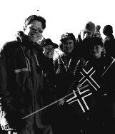

Firmahytte

- Andersen Consulting leier firmahytte i Grøndalen ved Hemsedal
- Hytta ble bygget i 94’ og har topp standard (9 sengeplasser,
varme-kabler, 2 bad, badstu, oppvask-maskin, peis, solrik after-ski
terasse)
- Bruk av hytta skjer ved loddtrekning blant grupper av ansatte,
prosjekter og ansatte med familier
- Masse muligheter til friluftsaktiviteter både sommer som vinter:
- Langrennsløyper, fjellterreng og fiskeelv utenfor stuedøra
- Kort biltur til alpinbakkene
- 9 hulls golfbane nede i veien
- Nabo til Hemsedal Feriesenter med ridning, paragliding, beachvolley,
golf og klatrevegg